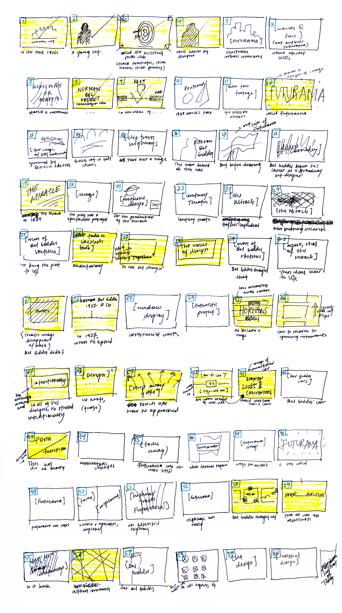

Minh-Anh Nguyen
A short informational video on Norman Bel Geddes' design work and philosophy.
Making informational videos is something I have wanted to do for a long time, so I jumped at the chance to do so for my Design History class. As a former prospective urban planning major, I was intrigued by the influence of Bel Geddes’ work in the development of the modern American highway system.
This project was my first time working extensively in Adobe Premiere Pro and After Effects, and writing and producing a video of this length by myself.
Research, scripting, storyboarding, voiceover, art direction, video production

Storyboards. The text below each frame is the corresponding text in the script. The white frames are sections that I've dedicated found images/footage to; the yellow frames are ones that I've chosen to animate.
Make time to craft the narrative. I’ve never been one to be afraid of writing, but the process of planning and writing the content for this video was much more time consuming than expected: a full three days of my week-long timeline. Spending a generous amount of time crafting the narrative for the work made it much easier to then choose the visual choices that would communicate the content best.
Had I more time, I would’ve chosen to use it on refining the script and storyboards to be more cohesive. I also would want to be more strategic about the overarching visual direction, rather than on a moment-by-moment basis.